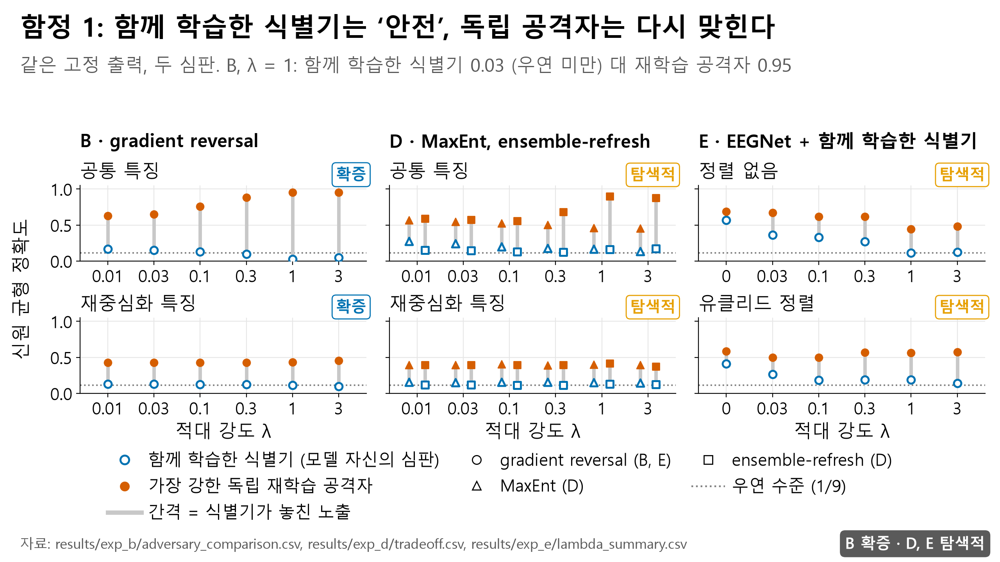
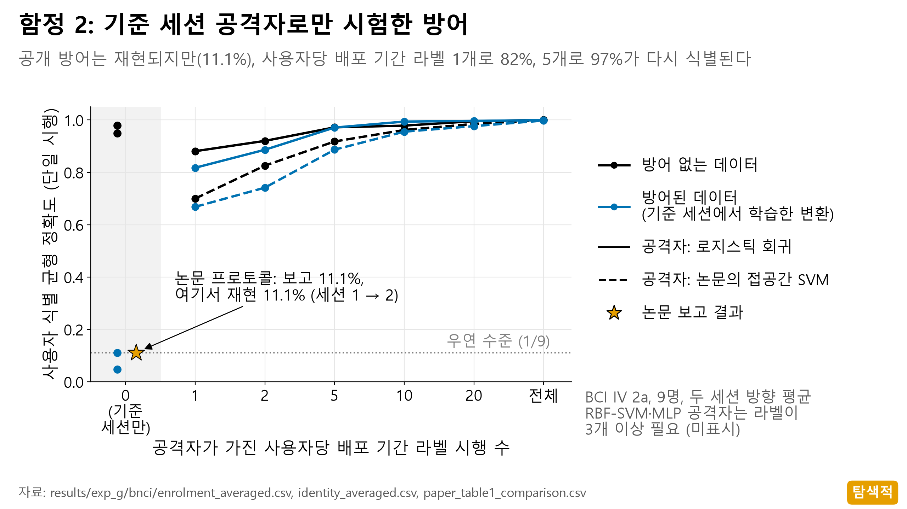
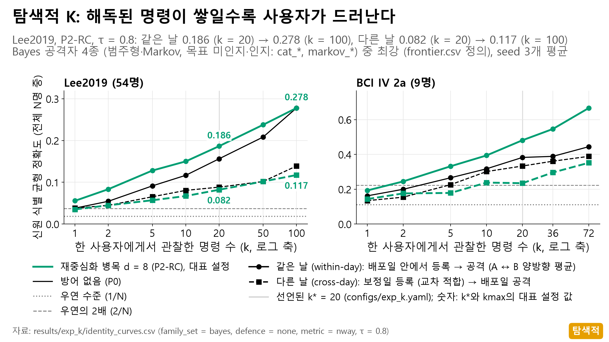
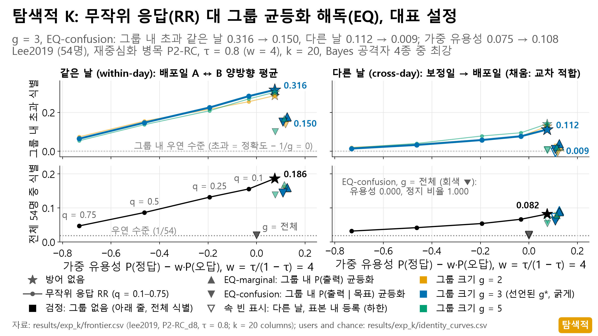
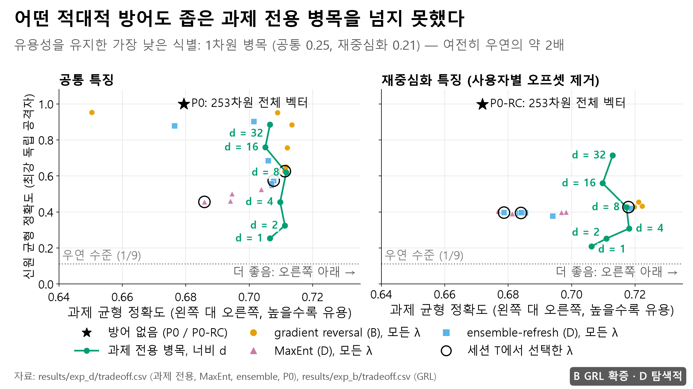
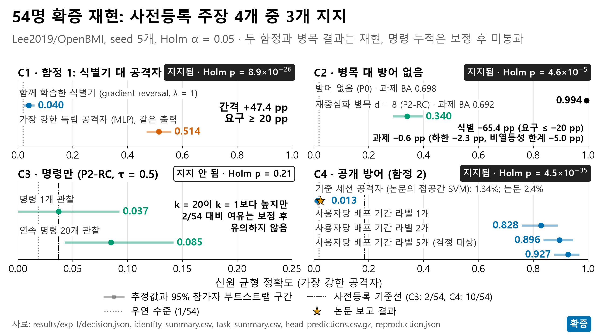

BEAT 프로젝트 결과 발표 · v2
BCI 전송물의 신원 노출과 방어 효과는 공격자가 어느 날의 기록으로 등록하느냐에 따라 달라지므로, 같은 날 수치 하나로는 위험도 보호도 주장할 수 없다
근거: 자체 핵심 수치(같은 날 0.994, 다른 날 0.520), 자체 방어 EQ, 그리고 새 사용자 51명에 대한 시각 인증 사전등록
BEAT 팀 · 이동현 · 장규범
2026년 11월 16일
[약 45초] 안녕하세요, BEAT 팀 이동현입니다. 저희는 BCI, 즉 뇌–컴퓨터 인터페이스가 기기 밖으로 보내는 정보만으로 사용자가 누구인지 알아낼 수 있는지를 측정했습니다. 오늘의 결론은 화면의 한 문장입니다. 신원이 얼마나 드러나는지, 방어가 얼마나 막는지는 공격자가 어느 날의 기록으로 등록하느냐에 따라 달라집니다. 그래서 같은 날 수치 하나로는 위험하다고도, 안전하다고도 말할 수 없습니다. 저희의 핵심 수치와 방어로 이것을 보이고, 새 사용자 51명의 사전등록 검증 결과로 마무리하겠습니다.
문제
BCI는 해독 결과를 밖으로 보내고, 공격자는 그 전송물로 사용자를 맞힌다
→
→
→
↑
공격자: 사용자별 기록으로 미리 등록하고
전송물이 누구 것인지 맞힌다
얼마나 새는가
특징 벡터와 명령에서 사용자 신원이 얼마나 드러나는가
줄일 수 있는가
왼손·오른손 해독 성능을 지키면서 노출을 낮출 수 있는가
어느 날로 등록하는가
공격자가 같은 날 기록으로 등록할 때와 다른 날 기록으로 등록할 때, 위험과 보호의 답이 같은가
2
[약 50초] BCI는 뇌파를 해독해 그 결과를 휴대폰, 클라우드, 로봇팔로 보냅니다. 밖으로 나가는 것은 특징 벡터이거나 왼쪽, 오른쪽, 정지 같은 명령입니다. 저희는 이 전송물만 보는 공격자를 가정했습니다. 공격자는 사용자별 기록을 미리 모아 두는데, 이것을 등록이라고 부르겠습니다. 그리고 새 전송물이 누구 것인지 맞힙니다. 질문은 세 가지입니다. 얼마나 새는가, 성능을 지키며 줄일 수 있는가, 그리고 공격자가 어느 날의 기록으로 등록하느냐입니다. 등록한 기록과 공격받는 기록이 같은 날이면 같은 날 조건, 다르면 다른 날 조건입니다. 이 세 번째 질문이 오늘 발표의 축입니다.
데이터와 봉인
공개 데이터 세 종으로 분석하고, 각 분석의 채점 전에 네 번 봉인했다
BCI IV 2a
9명 · 22채널 · 253차원
서로 다른 날 두 세션
탐색과 1차 확증 (봉인 1–2)
Lee2019/OpenBMI
54명 · 20채널 · 210차원
서로 다른 날 두 세션
확증 재현 C1–C4 (봉인 3)
Yang2025 (WBCIC-SHU)
51명 · 19채널 · 190차원
3일, 하루 200시행
다른 날 재현 M1–M3 (봉인 4)
봉인 1–3 · 자기 증명
프로젝트가 만든 Git 태그다. 언제 만들었는지는 제3자가 증명하지 않는다
봉인 4 · 시각 인증
FreeTSA RFC 3161 토큰, 토큰 시각 2026-11-10 20:26:22 GMT
CI 검증
python -m beat.verify --seals 가 봉인 뒤 변경을 검사한다
지표: 신원 balanced accuracy, 우연 수준 = 1/사용자 수 (9명 0.111, 54명 0.019, 51명 0.020). 공격자는 방어를 고정한 뒤 그 출력만으로 따로 학습한다
3
[약 55초] 데이터는 공개 데이터 세 종입니다. 9명의 BCI Competition IV 2a로 탐색과 1차 확증을, 54명의 Lee2019로 확증 재현을 했습니다. 그리고 분석에 쓰지 않았던 51명, 3일 기록의 Yang2025로 다른 날 재현을 사전등록했습니다. 각 분석은 채점 전에 커밋으로 봉인했습니다. 다만 봉인 1부터 3은 저희가 만든 Git 태그라서 제3자가 시각을 증명하지 않습니다. 그래서 네 번째 봉인은 FreeTSA의 시각 인증을 받았고, 봉인 뒤 변경 여부는 CI가 검사합니다. 지표는 신원 balanced accuracy, 우연 수준은 사용자 수의 역수입니다. 공격자는 방어를 고정한 뒤 그 출력만으로 따로 학습시킵니다.
결과 · 특징 누출 · Lee2019 54명
가공하지 않은 특징은 같은 날 0.994, 다른 날 0.520으로 사용자를 식별한다
전체 특징 (P0)
210차원 접공간 벡터, 방어 없음
재중심화 병목 (P2-RC)
과제 정보만 남긴 d = 8 표현
C2 확증 (같은 날): 0.994 → 0.340, 과제 정확도 변화 −0.6%p (하한 −2.3%p, 허용 한계 −5%p), Holm p = 4.6 × 10⁻⁵
가장 강한 독립 공격자의 값, 우연 수준 0.019. BCI IV 2a 9명은 22채널 253차원이며 같은 날 1.00
4
[약 65초] 아무 방어 없이 210차원 특징을 보내면, 54명에서 균형 정확도 0.994(사용자별 재현율의 평균)가 나옵니다. 그런데 이 0.994는 같은 날 수치입니다. 같은 날 기록의 한 부분으로 등록하고 다른 부분을 맞힌 값입니다. 다른 날 기록으로 등록하면 0.520으로 내려갑니다. 절반 가까이 떨어졌지만 우연 수준 0.019보다는 훨씬 높습니다. 아래 줄은 저희 방어인 재중심화 병목으로, 같은 날 0.340, 다른 날 0.054입니다. 같은 날 0.994를 0.340으로 낮춘 것이 확증 주장 C2였고, 과제 정확도 손실은 0.6퍼센트포인트였습니다. 다른 날 두 값은 사전등록한 보조, 즉 다른 날 시나리오의 값이고 자체 판정 없이 보고합니다. 위험의 크기도 방어의 효과도 등록한 날에 따라 달라집니다.
함정 1 · 함께 학습한 식별기
방어와 함께 학습한 식별기는 안전하다고 말하지만, 독립 공격자는 다른 날에도 다시 맞힌다

새 51명: 격차 0.093–0.096이 봉인한 하한 0.10 미만 → M2 지지 안 됨
BCI IV 2a 9명, λ = 1
0.026 대 0.951
함께 학습한 식별기 대 독립 공격자
Lee2019 54명, λ = 1
0.040 대 0.514
공격자 0.514는 같은 날 값Holm p = 8.9 × 10⁻²⁶
Lee2019 54명, 세션 1로 등록
0.040 대 0.239
격차 19.9%p가 남는다
5
[약 70초] 첫 번째 함정입니다. 적대적 방어는 식별기를 함께 학습시키고, 그 식별기를 속이도록 인코더를 훈련합니다. 9명에서 그 식별기는 0.026이었지만, 같은 출력으로 새로 학습시킨 공격자는 0.951을 맞힙니다. 54명 확증 주장 C1에서도 같은 날 독립 공격자는 0.514였고, 식별기 0.040은 세션 1 학습·세션 2 채점 단일 값입니다. 세션 1로 등록한 다른 날 공격자도 0.239를 맞혀 격차 19.9퍼센트포인트가 남았습니다. 이 값은 사전등록한 보조, 즉 다른 날 시나리오의 값이고 자체 판정 없이 보고합니다. 새 51명의 확증 판정 M2에서는 다른 날 격차가 0.093에서 0.096으로, 봉인한 하한 0.10에 못 미쳐 지지되지 않았습니다. 1일차 같은 날 격차는 0.717이었습니다. 함께 학습된 식별기의 점수는 보호의 증거가 아닙니다.
함정 2 · 기준 세션 공격자
기준 세션 공격자만으로 시험한 방어는, 같은 날 배포 라벨 몇 개로 다시 뚫린다

arXiv 2610.15626 재현, 2a 9명
90.8% → 11.1%
사전공개 논문
배포 기간 라벨, 사용자당 (2a 9명)
1개 81.75%
Lee2019 54명
1.34% → 92.7%
기준 세션 공격(다른 날, 논문 2.4%)
논문이 틀렸다는 뜻이 아니다. 공격자가 어느 날의 라벨을 갖느냐에 따라 보호 결론이 뒤집힌다
6
[약 60초] 두 번째 함정입니다. arXiv에 사전공개된, 학습 없이 신호를 변환하는 방어를 재현했습니다. 논문의 공격자는 과거 기준 세션의 라벨만 가집니다. 즉 다른 날 기록으로 등록합니다. 이 조건에서 식별률은 90.8퍼센트에서 11.1퍼센트로 떨어져, 논문 표의 접공간 SVM 값과 같게 재현됐습니다. 그런데 같은 날 배포 기간 출력 몇 개에 이름표를 붙이면, 사용자당 1개로 81.75퍼센트, 5개로 97.11퍼센트가 다시 식별됩니다. 54명 확증 주장 C4에서도 다른 날 기준 세션 공격은 1.34퍼센트, 같은 날 라벨 5개로는 92.7퍼센트였습니다. 논문이 틀린 것이 아니라, 공격자가 어느 날의 라벨을 갖느냐에 따라 결론이 뒤집힌다는 뜻입니다.
결과 · 명령 누출
명령만 보내도 관찰이 쌓이면 노출이 커지지만, 54명 확증 검정 C3는 지지되지 않았다

C3 · Lee2019 54명
지지 안 됨
τ = 0.5, 명령 20개에서 0.085
P2-RC d = 8, τ = 0.8
0.186 → 0.278
명령 20개 → 100개
같은 설정, 보정일로 등록
0.082 → 0.117
우연 0.019, Bayes 공격자 중 최강
7
[약 50초] 특징 대신 명령만 보내면 어떨까요. 명령 하나로는 거의 못 맞히지만, 같은 사람의 명령을 모으면 노출이 커집니다. 다만 54명 사전등록 검정 C3는 지지되지 않았습니다. 명령 20개에서 0.085, 우연의 4.6배였지만, 다중비교 보정 뒤 p가 0.21이었습니다. 이 판정은 그대로 둡니다. 이후 탐색 분석 K에서 정지 임계값 0.8, 베이즈 공격자로 다시 봤습니다. 같은 날에는 명령 20개에서 0.186, 100개에서 0.278이었고, 다른 날에는 0.082와 0.117이었습니다. 다른 날 값은 같은 날의 절반 이하입니다. 여기서도 등록한 날이 숫자를 바꿉니다.
방어 · 그룹 균등화 해독(EQ)
EQ는 보정일 기준으로 한 그룹 안 사용자들의 출력 분포를 같게 만들어, 그룹 안에서만 신원을 숨긴다
방어 전: 사용자마다 다른 P(출력 | 목표)
EQ 후(보정일 기준): 그룹 안에서 같은 분포
사용자 A
사용자 A
사용자 B
사용자 B
사용자 C
사용자 C
막대는 개념도이며 사용자별 변환 행렬은 선형계획법으로 구한다
g = 전체 54명을 한 그룹으로
유용성 0.000 · 정지 1.000
모두를 같게 하면 항상 정지만 남는다
g = 3 (54명 = 3명 × 18그룹)
유용성 0.108 · 정지 0.773
방어 없음: 유용성 0.075 · 정지 0.648
드러나는 것
그룹 소속
EQ는 그룹 안의 구분만 막는다
탐색 K · Lee2019 P2-RC d = 8, τ = 0.8, 배포일. 유용성 = P(정답) − w·P(오답). EQ의 유용성 차이는 방어 없는 규칙 대비이며 재보정 효과가 섞여 있다.사전등록 추정치 · Yang2025 1일차 개발 자료(같은 날, τ* = 0.60): 재보정만 한 경우 대비 EQ 비용 0.015 (구간 −0.002–0.032)
8
[약 50초] 그래서 명령 노출을 줄이는 방어 EQ를 만들었습니다. 사람마다 같은 목표에 내는 명령의 분포가 달라서, 이것이 지문 역할을 합니다. EQ는 사용자별 무작위 변환 행렬을 선형계획법으로 찾아, 보정일 혼동 행렬 기준으로 그룹 안 사용자들의 출력 분포를 똑같이 만듭니다. 그러면 보정일 기준으로는 그룹 안에서 누구인지 구별할 수 없습니다. 54명 전체를 한 그룹으로 묶으면 남는 해는 항상 정지뿐이어서, 세 명씩 묶었습니다. 주의할 점은 두 가지입니다. 어느 그룹인지는 드러나고, 방어 없음보다 높아 보이는 유용성에는 재보정 효과가 섞여 있어 방어의 이득으로 읽으면 안 됩니다.
방어의 범위 · 탐색 K
EQ의 보장은 맞춘 보정일에만 정확했고, 배포일에 등록한 공격자에게는 노출이 남았다

보정일로 등록, 배포일 공격
0.112 → 0.009
그룹 내 초과 식별, 명령 20개, g = 3
배포일 안에서 등록하고 공격
0.316 → 0.150
절반 가까이 남는다
남은 노출 0.138의 분해(별도 계산)
0.020 + 0.017 + 0.100
측정 바닥, 유한한 보정 데이터, 같은 날 시뮬레이션 밖의 몫
9
[약 70초] EQ는 보정일 출력으로 맞췄습니다. 보정일로 등록한 다른 날 공격자에게 그룹 안 초과 식별은 0.112에서 0.009로 거의 사라졌습니다. 그런데 배포일 안에서 등록한 같은 날 공격자에게는 0.316에서 0.150으로 절반 가까이 남았습니다. 이 잔여를 따로 분해하면 0.138인데, 프런티어와 별도로 계산해서 0.150과 다릅니다. 측정 바닥 0.020과 유한한 보정 데이터 몫 0.017을 빼면, 0.100은 같은 날 시뮬레이션으로 설명되지 않습니다. 여기에는 날 간 변화, 해독기 차이, 시행 간 의존, 그리고 Lee2019에서는 같은 날 공격자가 쓴 배포 구간 사이의 오프라인에서 온라인으로의 단계 전환이 섞여 있습니다. 모두 탐색 결과입니다. 하루에 맞춘 방어는 그날을 같게 만들 뿐 사람은 같게 만들지 못하는 것 아닌가, 이 질문이 다음 실험으로 이어집니다. [질문이 나오면: K의 무작위 응답에는 재보정이 없었으므로, EQ와 같은 유용성에서의 비교는 M의 추정치로 남겼습니다.]
사전등록 M · Yang2025 51명
새 사용자 51명 검증은 결과를 보기 전에 봉인하고 제3자 시각 인증을 받았다
1
1일차만 열고 설계
해독기, 임계값, 게이트를 1일차 안에서만 정한다
2
봉인 4: 커밋 e88154c, 태그 seal-4
계획, 코드, 설정, 1일차 선택을 고정한다
3
FreeTSA 시각 인증
토큰 시각 2026-11-10 20:26:22 GMT
4
그다음 2–3일차를 받아 판정
봉인된 코드가 봉인과 다르면 실행을 거부한다
판정 가족
M1–M3, Holm α = 0.05
1차 시나리오: 1일차로 등록, 2–3일차 공격 (다른 날)
EQ와 무작위 응답(RR)
사전등록한 추정치, 판정 없음
M3 검정력 (같은 날 효과 중 다른 날에 남는 비율)
보존율 검정력, α = 0.05 검정력, α/3 0.35 0.47 0.29 0.55 0.85 0.69 0.70 0.96 0.90
10
[약 55초] 그래서 새 사용자 51명, 3일 기록으로 확증 실험 M을 설계했습니다. 1일차만 열어 해독기와 기준을 정했고, 2–3일차 기록은 봉인 전에 요청하지 않았습니다. 파일 이름과 크기 목록을 본 사실은 사전등록에 공개했습니다. 주장은 세 개입니다. M1은 원 특징의 다른 날 식별, M2는 독립 공격자와 공동 학습 식별기의 격차, M3는 관찰 길이에 따른 본인 순위의 상승입니다. 세 주장은 Holm 보정으로 함께 판정했습니다. 계획은 커밋 e88154c로 봉인하고 FreeTSA 시각 인증을 받았습니다. 검정력은 같은 날 효과의 55퍼센트가 남으면 0.85였습니다. EQ와 무작위 응답은 판정 없는 추정치입니다.
사전등록 M · 결과
새 사용자 51명, 다른 날: 사전등록한 주장 3개 중 2개가 지지됐다
다른 날
확증 M1–M3
1일차로 등록, 2–3일차 공격 · Holm α = 0.05 · 독립 재계산 통과
주장 사전등록한 문구 · 판정 기준 결과 판정 M1 원 특징의 다른 날 식별(사전등록상 저위험 재현)기준: 최강 공격자 평균 재현율 > 10/51 (3종 Bonferroni)
로지스틱 공격자 재현율 0.345 대 10/51 = 0.196 지지 M2 독립 공격자와 공동 학습 head의 격차가기준: P3 λ = 1, 관측 격차 ≥ 0.10인 공격자만 검정
격차 0.093–0.096: 모두 0보다 크지만 지지 안 됨 M3 본인의 순위가 우연보다 높고 명령 1개일 때보다 높다기준: P2-RC d = 8, τ* = 0.60, 명령 50개, 순위 > 0.5
순위 0.649 대 명령 1개 0.538, Holm p = 1.1 × 10⁻⁴순위는 식별률이 아니다: top-1 0.061 지지
EQ와 무작위 응답(RR): 사전등록한 추정치, 판정 없음.
결과마다 쓸 문장은 결과를 보기 전에 결정 로그에 고정했다 (커밋 7b14cee). C3는 지지 안 됨으로 남는다
11
[약 70초] 새 51명을 1일차로 등록하고 2–3일차를 공격한 다른 날 조건에서, 사전등록한 주장 3개 중 2개가 지지됐습니다. M1, 원 특징의 다른 날 식별은 로지스틱 공격자의 재현율이 0.345로 기준 0.196을 넘었고, Holm p는 0.014입니다. M3도 지지됐습니다. 명령 50개에서 본인의 순위는 0.649로, 명령 1개일 때 0.538보다 높았습니다. 다만 순위는 식별률이 아닙니다. 1순위로 맞힌 비율은 0.061입니다. M2는 지지되지 않았습니다. 격차는 0.093에서 0.096으로 모두 양수였지만, 봉인한 관측 하한 0.10에 못 미쳐 규칙상 검정할 공격자가 없었습니다. 격차가 없다는 뜻은 아닙니다. EQ는 판정 없는 추정치라 격자 전체로 읽습니다. 명령 50개에서는 공격자 넷 중 셋이 K와 같은 방향이었고, 명령 20개에서는 감소가, τ 0.5에서는 막을 노출이 구별되지 않았습니다.
제안과 한계
보호를 주장하려면 여섯 가지를 확인해야 하고, 이 결과에는 분명한 한계가 있다
확인할 것
1
독립 공격자로 다시 공격한다
2
배포 기간 라벨을 가진 공격자를 시험한다
3
같은 날과 다른 날을 모두 보고한다
4
우연 수준과 사용자 수를 함께 밝힌다
5
단순한 기준선과 비교한다
6
관찰 길이를 늘리고, 채점 전에 봉인한다
한계
닫힌 집합 식별
재생 실험
공격자 범위
탐색 결과
자기 증명
EQ 보장의 범위
12
[약 55초] 보호를 주장하려면 적어도 여섯 가지를 확인해야 합니다. 독립 공격자로 다시 공격하고, 배포 기간 라벨을 가진 공격자를 시험하고, 같은 날과 다른 날을 모두 보고하고, 우연 수준과 사용자 수를 밝히고, 단순한 기준선과 비교하고, 관찰 길이를 늘리되 채점 전에 봉인하는 것입니다. 세 번째가 오늘 새로 더한 항목입니다. 한계도 있습니다. 닫힌 집합 식별이고, 로봇팔은 기록된 뇌파를 재생했습니다. 더 강한 공격자가 있을 수 있어 수치는 하한입니다. K와 R 등 일부는 이미 본 데이터를 다시 쓴 탐색 결과이고, 봉인 1부터 3과 접근 기록은 자기 증명입니다. EQ의 보장은 맞춘 보정일의 혼동 행렬에만 정확하고, 그룹 소속은 드러납니다.
정리
BCI 전송물의 신원 노출과 방어 효과는 공격자가 어느 날의 기록으로 등록하느냐에 따라 달라지므로, 같은 날 수치 하나로는 위험도 보호도 주장할 수 없다
1
같은 날 0.994였던 식별이 다른 날 등록에서는 0.520이었다. 낮아졌지만 우연 0.019보다 훨씬 높다
2
두 함정은 54명의 같은 날 조건에서 확증됐다(함정 1의 다른 날 격차 19.9%p는 사전등록 추정치).
3
다른 날에는 M1·M3만 재현됐다. M2는 같은 날 조건의 결과로 남는다
GitHub 저장소 · CI
기술보고서
인터랙티브 웹 데모
한국어 해설서
감사합니다. 질문을 받겠습니다
[약 45초] 정리하겠습니다. 같은 날 0.994였던 식별이 다른 날 등록에서는 0.520이었습니다. 낮아졌지만 우연보다 훨씬 높습니다. 두 함정은 54명의 같은 날 조건에서 확증됐고, 함정 1의 다른 날 격차 19.9퍼센트포인트는 사전등록 추정치입니다. EQ의 보장도 맞춘 날에만 정확했습니다. 그리고 새 51명의 다른 날에는 M1과 M3만 재현됐고, M2는 같은 날 조건의 결과로 남습니다. 그래서 신원 노출이든 방어든, 같은 날 수치 하나로는 주장할 수 없습니다. 감사합니다. 질문을 받겠습니다. [발표하지 않음: 슬라이드 1–13 발표 메모 합계 약 12분 20초(초당 4.5음절). 리허설이 13분을 넘으면 생략 순서는 정보량 백업, RR 세부(슬라이드 9에서는 이미 질문 대비 메모로 옮김), MLP 재적합, EEGNet 언급, EQ-marginal과 g 비교(슬라이드 8의 g = 전체 문장), H1/H2 표, 슬라이드 8–9 병합, 11의 M 추정치(EQ 격자 문장) 순이다. 슬라이드 4, C3 문장, 한계 줄은 빼지 않는다.]
백업 B1 · v1 방어 비교
좁은 과제 병목이 노출을 가장 많이 줄였지만 우연 수준까지는 아니다 (같은 날)

d = 1, BCI IV 2a 9명
식별 0.25
과제 정확도 0.71
d = 1, Lee2019 54명
식별 0.057
과제 정확도 0.70 · seed 3개
적대적 학습 3종
gradient reversal, MaxEnt, ensemble refresh 모두 이 기준선을 넘지 못했다
B1
[질의응답용] v1의 방어 비교입니다. 특징을 1차원까지 좁히면 9명에서 0.25, 54명에서 0.057까지 내려가고 해독 정확도는 거의 그대로였습니다. 모두 같은 날 수치이고, 54명 값은 seed 3개의 사전등록 추정치입니다. 적대적 방어 세 가지는 이 단순한 기준선을 넘지 못했습니다.
백업 B2 · Lee2019 54명 확증
54명 확증 재현에서 사전등록한 주장 4개 중 3개가 지지됐다

B2
[질의응답용] 54명 확증 재현의 전체 판정입니다. C1, C2, C4는 지지됐고 C3는 지지되지 않았습니다. Holm 보정을 네 주장 전체에 적용했습니다. 판정에 쓰인 대표 수치는 같은 날 조건입니다.
백업 B3 · 연구 무결성
지지되지 않은 가설과 실행 중 문제도 그대로 보고했다
사전등록 가설 결과 판정 H1 접공간 해독기가 CSP보다 낫다, 보정 1 run 0.689 대 0.669, p = 0.10 지지 안 됨 H2 적대 학습(P3)이 과제 전용 병목(P2)보다 노출을 선택된 λ = 0.01, 차이 없음 지지 안 됨 C3 54명에서 명령 관찰이 길수록 노출이 커진다 명령 20개 0.085, Holm p = 0.21 지지 안 됨
봉인 커밋 1–3
6ab5668, b216b7d, 9757c3f
봉인 해시 검증
봉인과 다르면 평가 데이터를 열지 않는다
실패 기록 보존
메모리 부족으로 멈춘 실행도 남기고 같은 분석을 재실행
B3
[질의응답용] 처음 세운 가설 H1과 H2는 사전 규칙상 지지되지 않았고, 54명의 C3도 지지되지 않았습니다. 확증 실행 코드는 봉인된 파일과 바이트 단위로 같지 않으면 평가 데이터를 열지 않습니다. 메모리 부족으로 한 번 멈춘 실행도 기록으로 남겼습니다.
백업 B4 · MLP 수렴 (탐색 R)
수렴하지 않은 MLP 45개를 모두 다시 적합해도 확증 판정은 바뀌지 않았다
같은 날
탐색 R
Lee2019 54명 · 공격자 값은 주 시나리오(같은 날)
주장 · 값 봉인 적합 재적합 판정 C1 · 독립 공격자와 0.4744 0.4584 지지 그대로 C2 · P0 대비 P2-RC d = 8의 0.6538 0.6599 지지 그대로 C3 · 명령 20개, 0.0763 0.0767 지지 안 됨
봉인 판정(C1·C2 지지, C3 지지 안 됨)은 MLP 수렴 여부에 좌우되지 않았다.
재적합 45개 (반복 20000회)
42개 수렴
C3 적합 269·278·280은 끝내 미수렴,
적합별 균형 정확도 변화
최대 2.6%p
C1 적합 1개
봉인 규칙 (반복 500회)
286/586 미수렴
확증 검정에 들어간 적합 중 45/85. 봉인 규칙대로 예측을 유지했다
B4
[질의응답용] 54명 확증에서 MLP 공격자 상당수가 반복 한도 500회 안에 수렴하지 않았고, 봉인 규칙대로 그 예측을 썼습니다. 확증 검정에 들어간 미수렴 적합 45개를 같은 데이터와 설정으로 반복 20000회까지 다시 적합했고, 42개가 수렴했습니다. C3의 세 적합은 그래도 수렴하지 않아 그 예측을 썼습니다. 재적합 예측으로 L의 판정 코드를 다시 돌려도 Holm 판정은 하나도 바뀌지 않았습니다. 같은 날 공격자 기준으로 C1 격차는 0.4744에서 0.4584로, C2 식별 감소는 0.6538에서 0.6599로, C3의 MLP 값은 0.0763에서 0.0767로 움직였고, 적합 하나의 균형 정확도 변화는 최대 2.6퍼센트포인트였습니다. 이것은 탐색 분석이고, 판정은 봉인된 값 그대로입니다.
백업 B5 · EQ 선형계획
EQ는 그룹 안 혼동 행렬을 같게 하는 제약 아래 가중 유용성을 최대화한다
목적
사용자 평균 가중 유용성 P(정답 방향) − w·P(반대 방향)을 최대화한다
w = τ/(1 − τ), τ = 0.8이면 w = 4
제약 (EQ-confusion)
그룹 안 모든 사용자 u에 대해 Σ_c C_u(y, c) M_u(c, o) = Q(y, o)
항상 정지가 언제나 가능해서 LP는 항상 풀린다
보장과 가정
LP가 받은 혼동 행렬 추정치(평활된 보정일 수)에 대해서만 정확하다
시행마다 독립 후처리, 목표 순서가 사용자와 무관, 시행 간 조건부 독립을 가정한다
그룹 소속은 드러난다: 최대 log2(N/g) 비트
유한한 보정 데이터와 보정일 → 배포일 변화가 잔여 노출을 남긴다
최적성은 쌍대 간격으로 인증한다
B5
[질의응답용] EQ는 사용자별 후처리 행렬을 선형계획으로 구합니다. 목표는 올바른 방향 이동 확률에서 반대 방향 이동 확률에 가중치를 곱해 뺀 값입니다. 제약은 그룹 안 모든 사용자의 출력 분포를 목표별로 같게 하는 것입니다. 보장은 LP가 받은 추정치에 대해서만 정확하고, 그룹 소속은 드러납니다.
백업 B6 · 정보량
정보량으로 보면 EQ는 그룹 안 신원 정보만 줄이고 전체 신원 정보는 거의 그대로 둔다
배포일 하루 안의 명령 1개당 정보 (같은 날) 방어 없음 EQ g = 3 과제 정보 (bits) 0.221 0.158 정보 전송률 ITR (bits/분) 1.02 0.73 신원 정보, 54명 전체 (bits) 0.467 0.452 신원 정보, 그룹 안 g = 3 (bits) 0.198 0.072
탐색 K · Lee2019 P2-RC d = 8, τ = 0.8 · 목표 인지 공격자 기준. 순열 영점 0.014는 방어 없음·54명 전체 행의 값이다. 그룹 안 정보가 줄어도 전체 정보가 남는 것은 그룹 소속이 드러나기 때문이다
B6
[질의응답용] 명령 1개당 정보량입니다. 그룹 안 신원 정보는 0.198에서 0.072비트로 줄지만, 54명 전체 신원 정보는 0.467에서 0.452비트로 거의 그대로입니다. 그룹 소속이 드러나기 때문입니다. 배포일 하루 안에서 잰 탐색 결과입니다.
백업 B7 · 봉인 4 토큰 검증
봉인 4의 시각 인증은 공개 도구 OpenSSL로 누구나 다시 확인할 수 있다
openssl ts -verify -digest ecc7e565…81c6 -in seal4.tsr -CAfile cacert.pem -untrusted tsa.crt
봉인 커밋
e88154c6f0b3d1a7887f2368763808fc91d9a81a
지문 (커밋 ID의 SHA-256)
ecc7e565…81c6
토큰 시각
2026-11-10 20:26:22 GMT
검증 도구와 결과
OpenSSL 3.5.7, 종료 코드 0, 검증 시각 20:26:36 UTC
한계
토큰은 커밋 시각만 증명한다. 다운로드 기록은 자기 증명이다
B7
[질의응답용] 봉인 커밋 ID의 SHA-256을 FreeTSA에 보내 시각 토큰을 받았습니다. 저장소의 토큰과 인증서로 OpenSSL ts -verify를 실행하면 누구나 Verification OK를 확인할 수 있습니다. 토큰은 커밋이 그 시각 이전에 있었다는 것만 증명하고, 다운로드 기록 자체는 자기 증명입니다.
백업 B8 · M의 EQ 추정치 (판정 없음)
새 51명에서 EQ 추정치는 칸 하나가 아니라 격자 전체로 읽고, 유용성 비교에는 단서가 붙는다
다른 날
사전등록 추정치
그룹 안 초과 식별, g = 3, 1일차로 등록
τ · 명령 수 범주형 범주형 Markov Markov τ* = 0.60 감소가 0과 K와 같은 K와 같은 K와 같은 τ* = 0.60 막을 노출 감소가 0과 감소가 0과 감소가 0과 τ = 0.5 막을 노출 막을 노출 막을 노출 막을 노출 τ = 0.5 막을 노출 막을 노출 막을 노출 막을 노출
K와 같은 방향 : 1일차 → 2–3일차 감소 구간이 0을 제외하고, EQ 자체의 초과 식별도 2일차 ↔ 3일차 또는 같은 날 반분에서 0을 제외
감소가 0과 구별 안 됨 : 막을 노출은 구별됐지만 EQ의 감소는 0과 구별되지 않았다막을 노출 구별 안 됨 : EQ 효과를 말할 수 없다
예시(τ*, 명령 50개, 범주형 목표 앎): 방어 없음 0.101 [0.022, 0.181] → EQ −0.008 [−0.058, 0.042], 감소 0.109 [0.007, 0.211]
유용성 단서 (2–3일차, τ* = 0.60)
방어 없음 가중 유용성 −0.041 [−0.086, 0.004]는 0을 포함한다 (w = 1.5).
정지율 0.723(1일차, 교차 적합 모델)과
EQ의 프라이버시 비용은 순진행 기준 +0.022 [0.012, 0.032]다. 가중 유용성 기준 −0.009 [−0.026, 0.008]은 0을 포함한다
해독기가 해롭다거나 EQ의 프라이버시가 공짜라고 읽지 않는다
B8
[질의응답용] 새 51명에서 EQ는 판정 없는 사전등록 추정치이고, 칸 하나가 아니라 사전등록한 격자 전체로 읽습니다. τ* 명령 50개에서는 공격자 넷 중 셋에서 1일차에서 2–3일차로의 감소 구간이 0을 벗어났고, EQ 자체의 초과 식별도 2일차와 3일차 사이 또는 같은 날 반분에서 0을 벗어나 K와 같은 방향이었습니다. 명령 20개에서는 모든 공격자에서 감소가 0과 구별되지 않았고, 그중 하나는 막을 노출도 구별되지 않았습니다. τ 0.5에서는 막을 노출 자체가 구별되지 않아 EQ 효과를 말할 수 없습니다. 유용성은 방어 없음의 가중 유용성 구간이 0을 포함하고, 순진행은 양수입니다. 정지율 0.723과 0.473은 서로 다른 모델의 값입니다. 1일차에 맞춘 규칙이 이후 날에 덜 멈추고 더 틀린 것이지, 해독기가 사용자에게 해롭다는 뜻은 아닙니다. EQ의 비용은 순진행 기준 0.022로 0보다 커서, 프라이버시가 공짜라고 말하지 않습니다.